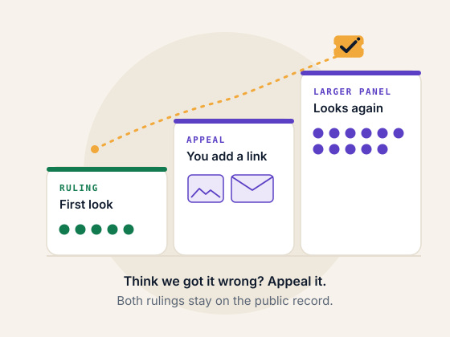
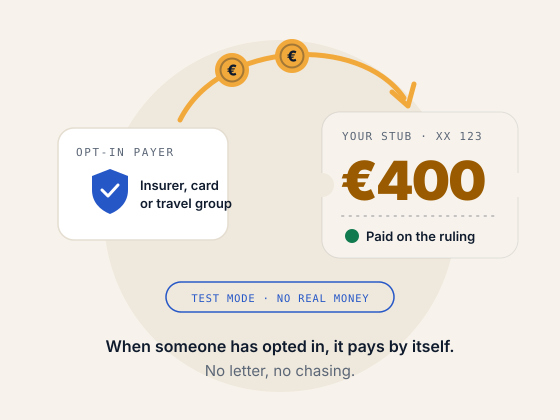
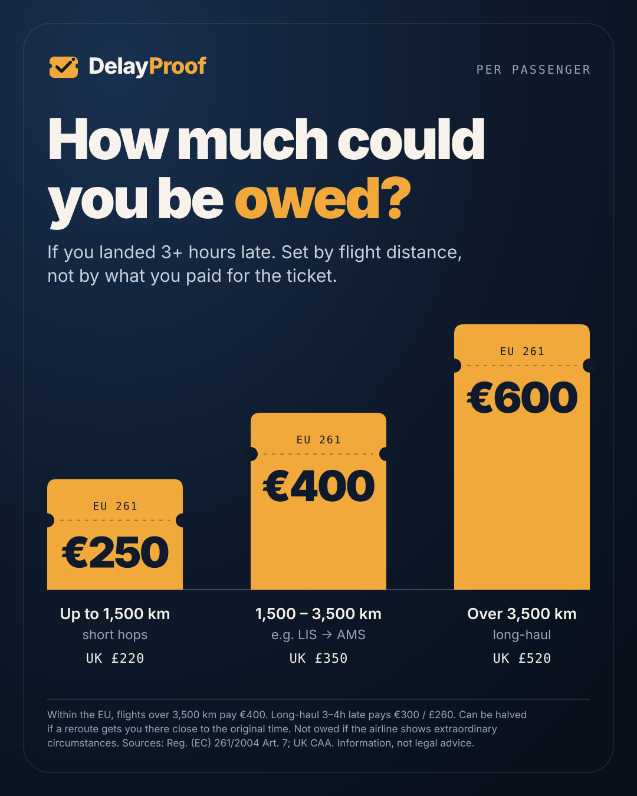

Late flight? Check what the rules say.
Your flight was late. Find out if you're owed €250 to €600.
What counts is how late you arrived: 3 hours or more, on a flight covered by EU or UK rules. The amount depends on distance (£220 to £520 in the UK). Enter your flight and date: independent validators each pull the public flight record and must agree before a ruling exists. Free, public, and you can appeal.
The network is checking
- 1
Claim recorded
- 2
Validators pulling the flight record
- 3
Validators agreeing
- 4
Ruling final
What a ruling looks like
Sample · made-up flight XX123, not a real ruling. Open the full sample
What happens after a ruling
- Proof card. A shareable card with the flight, the delay band, the cause and the amount, linked to the public record.
- Claim letter. If you're owed, a ready letter to the airline that cites the record. You send it yourself; there's no fee.
- Appeal. Think it's wrong? Ask for a bigger panel: 1, then 3, then 5 analysts. Either side can add public evidence first.
- What the airline is bound by. The law (EU261/UK261), not this ruling. The ruling is checkable evidence, not a court order. If the airline refuses, the UK CAA, a national enforcement body or a small-claims court decides.
How it works
1 · Independent checks
Several validators each pull the public flight record themselves and agree on the arrival-delay band and the cause. If they can't tell, the case is flagged for a closer look.

2 · A public, appealable ruling
The ruling is stored publicly. Think it's wrong? A bigger panel looks again: 1, then 3, then 5 analysts.

3 · Proof, a letter, a payout
Get a proof card and a claim letter. A payer that opts in can pay automatically when the ruling is "owed" (test mode for now).
How much could you be owed?
For a flight that lands 3 hours or more late, EU and UK rules set the amount by distance: €250 / £220 up to 1,500 km, €400 / £350 up to 3,500 km, and €600 / £520 beyond that. A long-haul flight that is 3 to 4 hours late pays half (€300 / £260).
Not owed for "extraordinary circumstances" like severe weather or an air-traffic-control strike. Technical faults and the airline's own staff strikes usually don't count as extraordinary. Sources: Reg. (EC) 261/2004 Art. 7; UK CAA.

Why not just ask a chatbot for a letter?
- Facts, not guesses. A chatbot guesses how late you were. Here, independent validators fetch the real record and must agree.
- A shared record. The ruling is public and timestamped, so it's not "the passenger's AI said so".
- It can pay by itself. Payers who opt in can pay automatically when the network rules "owed". A letter can't.
- You can appeal. A bigger panel re-checks if you think the ruling is wrong.
Honest limit: airlines aren't legally bound by a DelayProof ruling. It's strong, checkable evidence, not a court order.
My trips
Kept only in this browser. Totals say "ruled owed", never money you've received.
Stamps
Recent rulings
Read live from the contract.